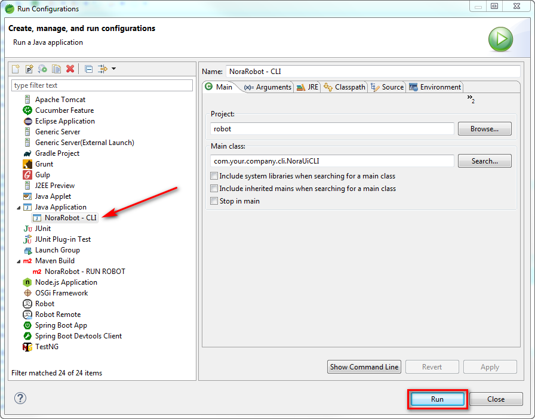
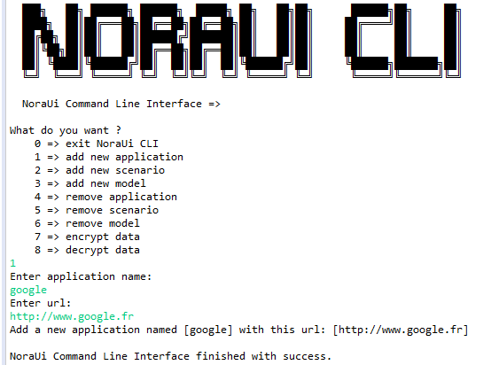
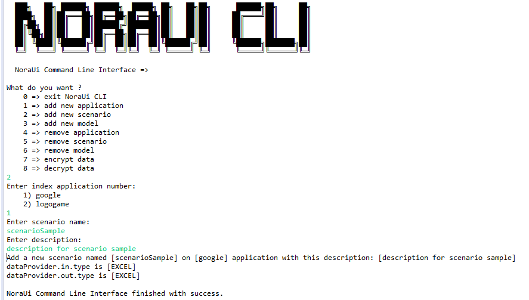
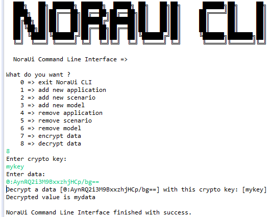

Overview
NoraUi, for NOn-Regression Automation for User Interfaces, is a Java framework based on Selenium, Cucumber and Gherkin stack to create GUI testing projects that can be included in the continuous integration chain of single/multi applications web solution builds.
It ensures applications non-regression throughout their life taking into account code evolutions and acceptance of defined business client criteria.
Manage your data
Choose your Input Data Provider
Excel (xls, xlsx, xlsm), CSV
REST Web Services
SQL (MySql, Postgres, Oracle)
...
or implement yours
Added features
Reworked Selenium methods
Error management
Reporting
Conditioned steps
Loop steps
Configuration management
Run from anywhere on everything
Windows/Unix/Mac OS portability
Independent of front-end web apps technologies
Many, perhaps most, software applications today are written as web-based applications to be run in an Internet browser. The effectiveness of testing these applications varies widely among companies and organizations. In an era of highly interactive and responsive software processes where many organizations are using some form of Agile methodology, test automation is frequently becoming a requirement for software projects. Test automation is often the answer. Test automation means using a software tool to run repeatable tests against the application to be tested. For regression testing this provides that responsiveness.
There are many advantages to test automation. Most are related to the repeatability of the tests and the speed at which the tests can be executed. There are a number of commercial and open source tools available for assisting with the development of test automation. Nora-UI is probably the open source solution you can use. This user's guide will assist new users in learning effective techniques in building test automation for web applications.
This user's guide introduces Nora-UI, teaches its features, and presents commonly used best practices accumulated from the Nora-UI community. Many examples are provided. Also, technical information on the internal structure of Nora-UI and recommended uses of Nora-UI are provided.
Test automation has specific advantages for improving the long-term efficiency of a software team's testing processes. Test automation supports:
- Frequent regression testing
- Rapid feedback to developers
- Virtually unlimited iterations of test case execution
- Support for Agile and extreme development methodologies
- Disciplined documentation of test cases
- Customized defect reporting
- Finding defects missed by manual testing
It is not always advantageous to automate test cases. There are times when manual testing may be more appropriate. For instance, if the application's user interface will change considerably in the near future, then any automation might need to be rewritten anyway. Also, sometimes there simply is not enough time to build test automation. For the short term, manual testing may be more effective. If an application has a very tight deadline, there is currently no test automation available, and it's imperative that the testing get done within that time frame, then manual testing is the best solution.
Concepts
Page Object Pattern
Page Object Pattern, the term that Selenium users keep buzzing. Page object is a design pattern that can be implemented as a Selenium best practices and also in NoraUi. The functionality classes (Page/PageElement) in this design represent a logical relationship between the pages of the application. Steps, regarding to them, encapsulate behaviors using one or several Pages.
The Page Object Pattern represents the screens of your web app as a series of objects and encapsulates the components represented by a page. It allows us to model the UI in our tests. A page object is an object-oriented class that serves as an interface to a page of your application unit tests.
Layered architecture
NoraUi framework introduces some concepts (Step, Page, PageElement, Selectors, packages...) all useful at different levels of your project. So let's explain quickly the different layers of NoraUi structure.

-
Gherkin Scenario
The Gherkin layer represents the functional actions to execute within your test. It is the highest abstraction level of your scenario.
-
Steps
Steps layer represents all the glue code that will be available to be used from Gherkin scenario features. All Steps classes are included under the 'steps' package. This is true for both your project and NoraUi framework. The Steps will contain all your tests behaviors (web driver actions, checks...) that you can split into different classes and sub-package related to your business needs.
-
Pages
Pages layer represents your target applications by defining their structures in PageElements that are used in step actions. All Pages classes can be distributed into differents 'page' sub-packages depending on the business domains they belong to. No behavior should be done in these classes except some minor validations. Behaviors are done in the upper layer (Steps).
-
Selectors
The last layer is the one which is the closest to remote applications. It contains versioned .ini files by application which define how to retrieve a DOM element using the upper layer (Pages) PageElements. Several solutions are implemented like search by xpaths, class, id...
Read the current Gherkin line
Found the matching Steps method to run
Get the concerned Page and/or PagesElement
Retrieve linked selectors
Go back up to the Steps layer to execute the action
So the framework is built to be used beginning from the top layer (closer to functional/business needs) to the bottom one (closer to target applications structures).
Enough of theory, lets get into practical implementation.
Installation Instructions from Eclipse
NORA-UI is a Maven project, You can use Noraui Archetype to create your robot.
In this chapter we will see together how to create a new Nora-UI project.
Archetype catalog configuration
Create or edit the archetype-catalog.xml file in your .m2 repository and the following content:
<?xml version="1.0" encoding="UTF-8"?>
<archetype-catalog
xsi:schemaLocation="http://maven.apache.org/plugins/maven-archetype-plugin/archetype-catalog/1.0.0 http://maven.apache.org/xsd/archetype-catalog-1.0.0.xsd"
xmlns="http://maven.apache.org/plugins/maven-archetype-plugin/archetype-catalog/1.0.0"
xmlns:xsi="http://www.w3.org/2001/XMLSchema-instance">
<archetypes>
<archetype>
<groupId>com.github.noraui</groupId>
<artifactId>noraui-archetype</artifactId>
<version>4.4.0.0</version>
<description>Maven archetype for use a NORA-UI project</description>
</archetype>
</archetypes>
</archetype-catalog>
On Eclipse:
New > Project... > Maven > Maven Project > Next > Next
Select Group Id: com.github.noraui, Artifact Id: noraui-archetype and Version: 4.4.4.0
Next

Finish
Installation Instructions from Cmd
mvn archetype:generate -B -DarchetypeGroupId=com.github.noraui -DarchetypeArtifactId=noraui-archetype -DarchetypeVersion=4.4.0.0 -DgroupId=com.your.company -DartifactId=robot -Dversion=0.0.1-SNAPSHOT -DinteractiveMode=falseor
mvn archetype:generate -B -DarchetypeGroupId=com.github.noraui -DarchetypeArtifactId=noraui-archetype -DarchetypeVersion=4.4.0.0 -DgroupId=com.your.company -DartifactId=ux -Dversion=0.0.1-SNAPSHOT -DrobotName=UxRobot -DtargetApplicationUrl=https://noraui.github.io/demo/logogame/v3/#/login -DtargetApplicationTitle="Logo Game" -DtargetApplicationId=logogame -DtargetApplicationName=LogogameQuick Start Guide
Create a new test scenario
1. Create a feature file
In your src/test/resources/steps folder, add a new file with the extension .feature.
Name it as the tag it will contain. This tag will be used after to launch a scenario.
You can move your scenario in any folder structure below /step folder.

This configuration file is used by NoraUi to map a tag and a path.

Copy these few lines to MyNewFeature.feature.
@MyNewFeature
Feature: My new feature
Scenario Outline: My new feature scenario
When I click on $mypackage.MyPage-myElement
Examples:
#DATA
|id|
|1|
#ENDWhen you write a feature, you have 2 possibilities when searching for steps:
- You can use an existing one (from your project or from NoraUi)
- You can create a new one and then implement it

Let's focus now on the structure of the added steps within our new scenario.
Then we want to continue on writing a more complex scenario in MyFeature.feature. So let's go back to it and complete the existing steps.
The objective will be to do a simple google research and check the results to find the first link.
The Gherkin content will look like this:
@MyNewFeature
Feature: My new feature
Scenario Outline: My new feature scenario
Given 'GOOGLE_HOME' is opened.
# When I update text $google.SearchPage-searchField with '<search>'
# And I click on $google.SearchPage-searchButton
# The 2 above lines have been replaced due to google search page behavior change
When I update text $google.SearchPage-searchField and type ENTER with '<search>'
Then I check that $google.SearchPage-googleLink is present
And I go back to 'GOOGLE_HOME'
Examples:
#DATA
|id|search|Result|
|1|test|
#END2. Create a Page class
In order to reference target Page elements, we need to instantiate a new SearchPage in a new google package (under application.pages).
Paste the following Java code into SeachPage class:
public class SearchPage extends Page {
public final PageElement searchField = new PageElement("-searchField", "Search field");
public final PageElement searchButton = new PageElement("-searchButton", "Search button");
public final PageElement googleLink = new PageElement("-googleLink", "Google first link");
public SearchPage() {
super();
this.application = "google";
this.pageKey = "GOOGLE_SEA";
this.callBack = Context.getCallBack("RESTART_WEB_DRIVER");
}
@Override
public boolean checkPage(Object... elements) {
return true;
}
}Your application pages must always extend abstract class Page.
From top to bottom, several instances of PageElement are created to make the link Gherkin feature.
The constructor defines the application this Page comes from (we will see after how to define applications in XXXContext class), its unique key and a callback in case of failure of any behavior related to this Page.
Finally the checkPage() method can be override to use your own way to validate the Page is correctly opened in the web browser driver (by checking current page title for instance).
3. Define selectors
Once your new Page implemented, the next action consists of defining the way to select its PageElements when it is targeted by the web driver.
There are several ways to look for a HTML markup in a DOM in NoraUi (CSS selector, link content, id, name, CSS class or xpath which is the most complete mode but quite more difficult to describe).
Under src/main/resources/selectors/V1, create a new file named google.ini and paste the following content:
[GOOGLE_SEA-searchField]
id=lst-ib
[GOOGLE_SEA-searchButton]
name=btnK
[GOOGLE_SEA-googleLink]
xpath=(//h3//a)[1]
All you have to know about selectors is here. We easily locate searchField and searchButton using id and name HTML attributes.
For the googleLink element, we use xpath to get the first link displayed on the results page.
4. Define your own steps
You should use as much as possible the NoraUi generic steps for basic purposes.
This can be made directly with Gherkin language as we have done before, or within your own steps. Steps definition are simple classes under application.steps package. These classes should extend Step class. From them, you can use Pages and code specific actions and expectations:
public class MyOwnSteps extends Step {
@Inject
private SearchPage searchPage;
@Then("The GOOGLE search page is displayed")
public void checkGoogleSearchPage() throws FailureException {
if (!searchPage.checkPage()) {
new Result.Failure<>("google", "ERROR_MESSAGE", true, searchPage.getCallBack());
}
}You can go further by combining NoraUi generic methods calls inside one Step method.
Example:
- You need click on button A.
- Check value on input text B.
- Update value on input text C with "GREEN" if value of B is different of "RED".
- Or update value on input text C with "ERROR".
@Given("custom application action with click on {page-element}, check value on {page-element} and update value on {page-element}")
public void customApplicationAction(PageElement elementNameA, PageElement elementNameB, PageElement elementNameC) {
clickOn(elementNameA);
if (!checkInputText(elementNameB, "RED")) {
updateText(elementNameC, "GREEN");
} else {
updateText(elementNameC, "ERROR");
}
}Then from the Gherkin feature file, you just need to call your code like this:
@MyNewFeature
Feature: My new feature
Scenario Outline: My new feature scenario
...
custom application action with click on $package.Page-elementA, check value on $package.Page-elementB and update value on $package.Page-elementC
...
Examples:
#DATA
|id|
|1|
#ENDSometimes you have no choice but to develop by yourself complex methods.
- You need to send a flow request (SOAP, REST call...) and wait a possible response
- You need check a special behavior.
- Browse DOM arrays and objects serialized to json.
- ...
@Then("custom application action with {string}")
public void cancelOrNotAllSteps(String fooJsonString) throws FailureException {
Foos foos = new Foos();
foos.deserialize(fooJsonString);
try {
for (Foo foo : foos) {
List<WebElement> rows = Context.waitUntil(ExpectedConditions.presenceOfAllElementsLocatedBy(Utilities.getLocator(myappHomePage.cancelStepList)));
if ("to cancel".equals(foo.getActionOfStepToBeProcessed())) {
for (int i = 0; i < rows.size(); i++) {
WebElement row = rows.get(i);
if (row.getText().startsWith(foo.getStepToBeProcessed())) {
selectCheckbox(myappHomePage.cancelStepCheckbox, true, i + 1);
}
}
} else if ("to achieve".equals(foo.getActionOfStepToBeProcessed())) {
for (int i = 0; i < rows.size(); i++) {
WebElement row = rows.get(i);
if (row.getText().startsWith(foo.getStepToBeProcessed())) {
selectCheckbox(myappHomePage.cancelStepCheckbox, false, i + 1);
}
}
}
}
} catch (TechnicalException e) {
new Result.Failure<>(fooJsonString, NoraRobotMessages.FAIL_MESSAGE_CLICK_ON_MY_APPLICATION, true, myappHomePage.getCallBack());
}
}
In our google search page testing scenario, we don't need to create new Steps methods for the moment. We will only use existing framework ones.
5. Manage your applications
Open your XXXContext.java class and add the following code in it (see lines with '/** Added line(s) **/' comment):
...
/** Added lines **/
public static final String GOOGLE_HOME = "GOOGLE_HOME";
public static final String GOOGLE_KEY = "google";
private String googleHome; // GOOGLE home url
/**
* Constructor is useless because all attributes are static
*/
private NoraRobotContext() {
super();
}
/**
* {@inheritDoc}
*/
@Override
public synchronized void initializeRobot(Class clazz) {
super.initializeRobot(clazz);
logger.info("NoraRobotContext > initializeRobot()");
// Urls configuration
/** Added line or use the NORAUI CLI directly **/
googleHome = getProperty(GOOGLE_KEY, applicationProperties);
logogameHome = getProperty(LOGOGAME_KEY, applicationProperties);
// Selectors configuration
/** Added line or use the NORAUI CLI directly **/
initApplicationDom(clazz.getClassLoader(), selectorsVersion, GOOGLE_KEY);
initApplicationDom(clazz.getClassLoader(), selectorsVersion, LOGOGAME_KEY);
// Exception Callbacks
/** Added line or use the NORAUI CLI directly **/
exceptionCallbacks.put(GO_TO_GOOGLE_HOME, STEPS_BROWSER_STEPS_CLASS_QUALIFIED_NAME, GO_TO_URL_METHOD_NAME, GOOGLE_HOME);
/** Added line or use the NORAUI CLI directly **/
exceptionCallbacks.put(CLOSE_WINDOW_AND_SWITCH_TO_GOOGLE_HOME, STEPS_BROWSER_STEPS_CLASS_QUALIFIED_NAME, "closeWindowAndSwitchTo", GOOGLE_KEY, GOOGLE_HOME);
/** Added line or use the NORAUI CLI directly **/
exceptionCallbacks.put(CLOSE_ALL_WINDOWS_AND_SWITCH_TO_GOOGLE_HOME, STEPS_BROWSER_STEPS_CLASS_QUALIFIED_NAME, "closeAllWindowsAndSwitchTo", GOOGLE_KEY);
exceptionCallbacks.put(GO_TO_LOGOGAME_HOME, STEPS_BROWSER_STEPS_CLASS_QUALIFIED_NAME, GO_TO_URL_METHOD_NAME, LOGOGAME_HOME);
exceptionCallbacks.put(CLOSE_WINDOW_AND_SWITCH_TO_LOGOGAME_HOME, STEPS_BROWSER_STEPS_CLASS_QUALIFIED_NAME, "closeWindowAndSwitchTo", LOGOGAME_KEY, LOGOGAME_HOME);
exceptionCallbacks.put(CLOSE_ALL_WINDOWS_AND_SWITCH_TO_LOGOGAME_HOME, STEPS_BROWSER_STEPS_CLASS_QUALIFIED_NAME, "closeAllWindowsAndSwitchTo", LOGOGAME_KEY);
// applications mapping
/** Added line or use the NORAUI CLI directly **/
applications.put(GOOGLE_KEY, new Application(GOOGLE_HOME, googleHome));
applications.put(LOGOGAME_KEY, new Application(LOGOGAME_HOME, logogameHome));
Page.setPageMainPackage("com.your.company.application.pages.");
}
...
// home getters
/** Added block or use the NORAUI CLI directly **/
public String getGoogleHome() {
return googleHome;
}
public String getLogogameHome() {
return logogameHome;
}
Here, we just have defined in the robot Context a new "google" application linked with a selectors file named "google.ini" and pointing at a URI named "google" in the robot properties file (src/main/resources/XXX.properties).
So, in this file, add the following content: google=${google} and in src/test/resources/environments filter files, you can simply set a value to the new google variable. An environment filter file should look like this (for instance 'dev.properties'):
#chrome, firefox or ie
browser=chrome
# remoteWebDriverUrl=http://localhost:4444/wd/hub
# remoteWebDriverBrowserVersion=80
# remoteWebDriverPlatformName=Linux
headless=true
noSandbox=true
# modifyheaderPath=
timeout=60
selectors.version=V1
display.stacktrace=false
#application list
logogame=https://noraui.github.io/demo/logogame/v3/
google=https://www.google.com/
# proxy configuration
http_proxy=
https_proxy=
no_proxy=
locale=enThese different filter files are necessary to run your scenarios on several platforms and manage the global configuration dynamically depending on the phase in which the robot is running. Commonly, the phases are dev for development, ci for continuous integration and prod for production if the robot aims for executing operations on applications in production.
6. Choose data providers
Before launching the test, we need to define one last thing, input and output data providers.
Input data providers are plugged to provide a data set on which the scenario will loop as many times as the lines it contains.
Several types are available: EXCEL, CSV, DB (ORACLE, MYSQL, POSTGRE), REST, GHERKIN. You can also create a specific one regarding your needs (see Custom data provider).
Output data providers are mainly used to write results of each run on the provided data set. Other information can also be returned to the user during the execution (for instance a value read on a page element).
Several types are available: EXCEL, CSV, REST, CONSOLE. You can also create a specific one regarding your needs (see Custom data provider).
For the rest of this exercise, we will configure GHERKIN as the input data provider and CONSOLE as the output data provider.
That means testing data will be included directly within the 'MyNewFeature' feature file and results will be written in the default console.
Update your XXXRobot.properties and change these lines to set providers as described above:
...
# type of input dataProvider (EXCEL, CSV, DB, REST, GHERKIN, noraui.data.xxx.YourCustomInputDataProvider)
dataProvider.in.type=GHERKIN
# type of output dataProvider (EXCEL, CSV, REST, CONSOLE, noraui.data.xxx.YourCustomOutputDataProvider)
dataProvider.out.type=CONSOLE
...We are now ready to run our first test.
Run the scenario
1. From Eclipse run configuration
1. From Eclipse run configuration
If you initialized the maven project by using the archetype, you should already have an available run configuration in Eclipse. Otherwise, it should look like this:
Replace "norarobot" by the name of your project.
Then by running this configuration, a prompt will appear asking for the name of the feature to launch (exactly the @tag associated to the feature file on the top of it). Type "MyNewFeature" and the scenario is starting.
2. From Maven command
If you want to run you tests from a command prompt, the Eclipse run configuration equivalent would be:
mvn clean verify -PscenarioInitiator,dev,norarobot -Dcucumber.options="--tags '@MyNewFeature'" -Dmaven.test.failure.ignore=trueAnalyse results
As the input data are placed in src/test/resources/data/in, result files are placed in src/test/resources/data/out in the case you are using files as output (EXCEL or CSV).
For this tutorial, we chose the CONSOLE data output provider. So after the run, you should see the following content in the console:
[2017-09-24 13:08:43]: > When I update text $google.SearchPage-searchField with 'test'
[2017-09-24 13:08:43]: #1 - When I click on $google.SearchPage-searchButton
[2017-09-24 13:08:44]: #2 - And I check that $google.SearchPage-googleLink is present
[2017-09-24 13:08:44]: #3 - And I go back to 'GOOGLE_HOME'
[2017-09-24 13:08:47]: ****************************************************************************************
[2017-09-24 13:08:47]: * *
[2017-09-24 13:08:47]: * Scenario: [@MyNewFeature] step 1 of 1 with 0 error(s) and 0 alert(s). 0s remaining *
[2017-09-24 13:08:47]: * *
[2017-09-24 13:08:47]: ****************************************************************************************
1 Scenarios (1 passed)
5 Steps (5 passed)
0m10,508sIn addition to providers, Cucumber generates 3 types of reports that you can find in target/reports folder. The HTML report is more appropriate for the majority of users. Json and Junit reports can be reinjected thereafter in other applications like dashboards or continuous integration tools (Jenkins, Travis CI...).
To go further
Take a look at nora-academy project to create a new testing project on a local JHipster application.
Command Line Interface
Nora-UI framework a CLI (Command Line Interface) for developers.
You can add a new target application, add a new scenario, ... using a command line.
Command Line Interface

-
Add a new target application

-
Add a new scenario

-
Add new model
-
Remove application
-
Remove scenario
-
Remove model
-
Encrypt data
-
Decrypt data

Official java doc
Nora-UI framework has a complete technical documentation for developers.
You can find all official java doc here
Continuous Integration
The use of Nora-UI is achieved through continuous integration.
In this chapter we will see together how to configure a Jenkins and reap the results on a daily basis.
- Jenkins
Use a Maven job.
On "Goal" of Build part:
clean test javadoc:javadoc -Dcucumber.options="--tags '@LoginLogout'" -Pjavadoc,preIC,scenarioInitiator,ci,unit-tests,postIC,drivers,analyze -Dmaven.test.failure.ignore=true sonar:sonar
On "Execute shell script" of Post Steps part:
cp ${WORKSPACE}/src/test/resources/dev/formatter.js ${WORKSPACE}/target/reports/html/formatter.js
cp ${WORKSPACE}/src/test/resources/dev/index.html ${WORKSPACE}/target/reports/html/index.html
cp ${WORKSPACE}/src/test/resources/dev/counter.js ${WORKSPACE}/target/reports/html/counter.js
On "Archive artifacts" of Actions following the build part:
target/classes/**/*,target/coverage-reports/*
On "Reports" of Publish HTML reports part (from HTML Publisher plugin):
HTML directory to archive: target/reports/html
Index page[s]: index.html
Report title: Cucumber HTML Report


On "Groovy script" of Groovy Postbuild part (from Groovy Postbuild):
if(expectationMatcher.count >0){
def utCount = manager.build.logFile.text.count("Failures: 0, Errors: 0, Skipped: 0")
String expectation = expectationMatcher[0][1]
def expectationCount = manager.build.logFile.text.count(expectation)
if(!(expectationCount==2 && (manager.envVars["UT_COUNT"].equals(utCount+"") || utCount == 2))) {
manager.addErrorBadge("Tests results don't match expectations")
manager.createSummary("error.gif").appendText("Wrong tests results
Expected: " + expectation + "
Expected successful UT: " + manager.envVars["UT_COUNT"] + " and result is " + utCount, false, false, false, "red")
manager.buildFailure()
}
else{
manager.addBadge("success.gif", "Tests result match expectations")
manager.createSummary("green.gif").appendText("Build instable but errors match expectations
Expected: " + expectation + "
Successful UT: " + utCount, false, false, false, "green")
}
}On "travis.yml" of Build part:
script:
- test/run.sh
On test/run.sh file:
mvn clean org.jacoco:jacoco-maven-plugin:prepare-agent package javadoc:javadoc -Dcucumber.options="--tags '@LoginLogout'" -Pjavadoc,preIC,scenarioInitiator,ci,unit-tests,postIC,drivers,analyze -Dmaven.test.failure.ignore=true sonar:sonar -Dsonar.host.url=https://sonarqube.com -Dsonar.organization=$YOUR_ORGANIZATION -Dsonar.login=$SONAR_TOKEN
curl -s "https://api.travis-ci.org/jobs/${TRAVIS_JOB_ID}/log.txt?deansi=true" > nonaui.log
sed ... and exit 255 if an error occurred.
OWASP Zed Attack Proxy (ZAP)
Nora-UI framework can be use to OWASP Zed Attack Proxy
You can find all official doc here and you can download ZAP installer here
Nora-UI configuration (robot\src\test\resources\environments\dev.properties):
# proxy configuration
http_proxy=http://localhost:8087
https_proxy=http://localhost:8087
no_proxy=Start Zed Attack Proxy (ZAP) on a particular address and port. ZAP provides a setting for that: Open Options and then Local Proxies and specify your proxy settings.
Besides that it should be possible to configure the proxy used by ZAP like you would do for any other Java based application. ZAP provides a setting for that: Open Options and then Connection and specify your proxy settings.
Custom data provider
You can create a custom data provider (Java language).
- Create a new package « xxx.xxx.xxx.data.xxx » (Example: « com.your.company.data.json »).
- Create a new java class (Example: « CustomJsonDataProvider »).
- Make this this class extend “CommonDataProvider » and implement « DataInputProvider » and/or « DataOutputProvider ».
- Redefine the mandatory unimplemented methods (you can refer to the NoraUi existing ones).
- In your XXXRobot.properties file:
# type of input dataProvider (EXCEL, CSV, SQL, REST, GHERKIN, com.your.company.data.xxx.YourCustomInputDataProvider)
dataProvider.in.type=com.your.company.data.json.CustomJsonDataProvider
# type of output dataProvider (EXCEL, CSV, REST, CONSOLE, com.your.company.data.xxx.YourCustomOutputDataProvider)
dataProvider.out.type=com.your.company.data.json.CustomJsonDataProviderYou can find a sample here
Our clients
They trust us.